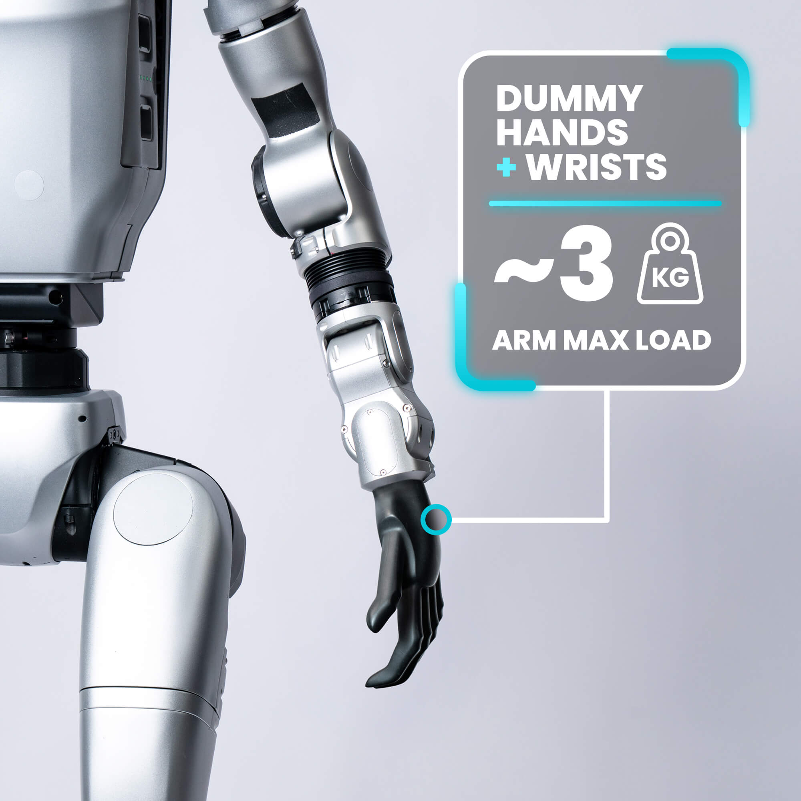
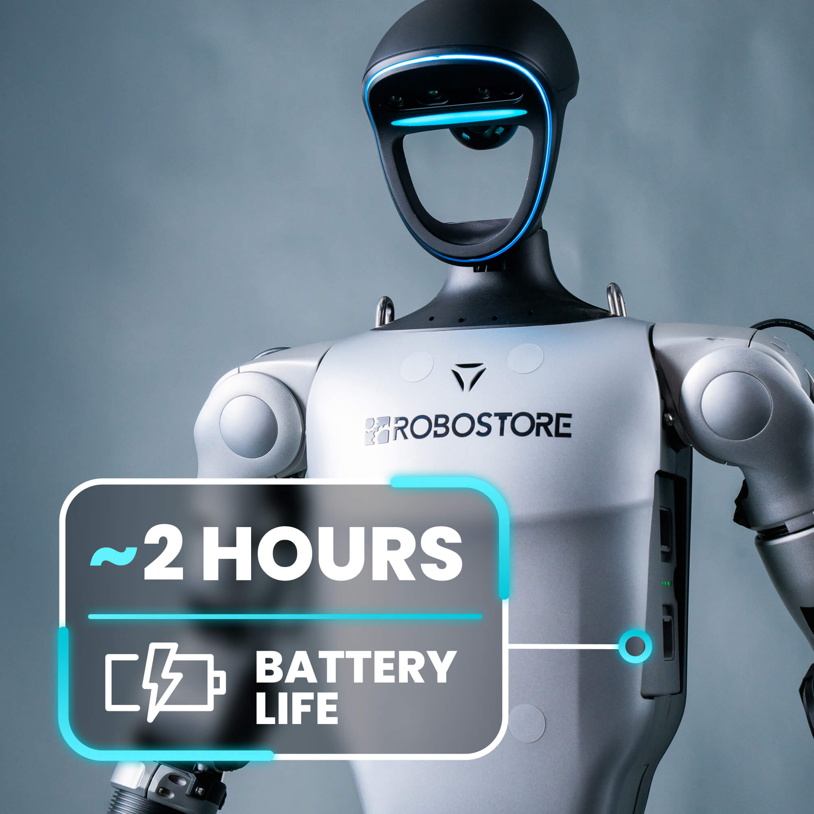

Varianti G1 EDU: U1–U10 e manipolatori
Le varianti non si chiamano “Ultimate”: in listino e ordine Unitree sono identificate da codice G1-U1 … G1-U10. La differenza principale è la base meccanica (23 o 29 DoF) e il manipolatore montato (dummy, Dex3-1, Inspire, Revo2).
| SKU | DoF | Base / braccia | Manipolatore | Scheda prodotto |
|---|---|---|---|---|
| G1 Air | 23 | Dummy, CPU 8-core | Nessuno (non EDU) | G1 Air |
| G1-U1 | 23 | EDU + Jetson Orin NX 100 TOPS | Mani dummy (no polsi) | G1-U1 |
| G1-U2 | 29 | Vita 3 DoF, braccio 7 DoF | Dummy + polsi (predisposto upgrade mani) | G1-U2 |
| G1-U3 | 43 | Base 29 DoF | Dex3-1 a 3 dita, controllo forza, senza tattile | G1-U3 |
| G1-U4 | 43 | Base 29 DoF | Dex3-1 a 3 dita con sensori tattili | G1-U4 |
| G1-U5 | — | Base 29 DoF | Inspire RH56DFQ (5 dita), senza tattile | G1-U5 |
| G1-U6 | — | Base 29 DoF | Inspire RH56DFTP (5 dita) con tattile | G1-U6 |
| G1-U7 | 37 | Base 29 DoF | BrainCo Revo2 Basic (5 dita) | G1-U7 |
| G1-U9 | 37 | Base 29 DoF | Dex3-1 senza tattile (config. compatta) | G1-U9 |
| G1-U4-37DOF | 37 | Base 29 DoF | Dex3-1 con tattile | G1-U4-37DOF |
| G1-U10 | 35 | Base 29 DoF | Revo2 Basic (5 dita) | G1-U10 |
Prezzi aggiornati: listino End-User Abra. Per confronto tra modelli: quale umanoide scegliere.


Specifiche tecniche di riferimento
- Altezza ~132 cm · Peso ~35 kg (con batteria)
- Autonomia ~2 ore · Velocità max ~2 m/s
- Percezione LiDAR Livox MID-360 (
192.168.123.120) + Intel RealSense D435i - Compute EDU NVIDIA Jetson Orin NX 16 GB, 100 TOPS (PC2 di sviluppo)
- Coppia ginocchio EDU 120 N·m · Payload braccio ~3 kg
Accessori per il primo avvio
In lab consigliamo sempre:
- Telecomando R3 — obbligatorio per accensione e motion mode
- Telaio di protezione / imbracatura — avvio sospeso (metodo più sicuro)
- Batteria di riserva e caricatore per sessioni oltre 2 h
- Cavo Ethernet (Cat5e+) o modulo router Unitree per accesso Wi‑Fi al robot
Telecomando R3: calibrazione e accensione
Prima di muovere il robot, verifica che il telecomando sia accoppiato (indicatore DL acceso a destra) e calibrato.

Calibrazione joystick (traduzione da manuale Unitree)
Non toccare i joystick
Tieni il telecomando in mano senza premere le leve.
Entra in calibrazione
Premi contemporaneamente F1 + F3. Il telecomando emette un beep continuo (1/sec).
Muovi le leve a fine corsa
Ruota joystick sinistro e destro su tutti gli assi, più volte.
Salva
Quando i beep si fermano, premi F3 una volta per memorizzare la calibrazione.
Accensione / spegnimento telecomando
Accensione: pressione breve sul pulsante power → tieni premuto ≥2 s fino a due beep.
Spegnimento: pressione breve → tieni premuto ≥2 s fino a tre beep.
Come accendere il G1: tre metodi
Metodo 1 — Seduto (se hai una sedia robusta)
- Appoggia il G1 su una sedia, braccia e gambe naturali.
- Inserisci la batteria (click + verifica fibbia).
- Pressione breve sul pulsante batteria → tieni ≥2 s per accendere.
- Attendi ~1 min (zero torque su tutti i giunti).
- L2 + B → smorzamento.
- Sostieni la spalla → L2 + UP → pronto in piedi.
- R2 + A → controllo operativo (motion mode).
Metodo 2 — Sospeso al telaio (consigliato in lab)


Preparazione
Fissa corde alle fibbie delle spalle, collega al telaio. Solleva finché i piedi non toccano il pavimento. Articolazioni libere, nessun cavo impigliato.
Accensione batteria
Pressione breve → pressione lunga ≥2 s. Attendi ~1 min (zero torque).
Sequenza telecomando
L2 + B (smorzamento) → L2 + UP (pronto, sostenere spalla) → abbassa gradualmente la fune finché i piedi toccano terra → R2 + A (motion mode) → attendi stabilizzazione → sgancia la fune.
Camminata
Joystick sinistro: avanti/indietro. Joystick destro: rotazione. START: alterna standing / walking.
Metodo 3 — Da terra (solo superficie piana e dura)
- G1 supino, articolazioni libere.
- Accendi batteria (breve + lungo ≥2 s), attendi zero torque.
- L2 + B → L2 + X → il robot si alza autonomamente. Mantieni distanza di sicurezza.
- R2 + A quando è in piedi e stabile.
Spegnimento sicuro
Consigliato (seduto): sostieni le spalle → L2 + LEFT (siede) → L2 + B → tieni premuto interruttore batteria ≥2 s.
In sospensione: stessa sequenza con robot fermo al telaio.
Spegnimento in piedi senza assistenza: sconsigliato — rischio caduta.
Modalità operative del G1
| Combinazione | Modalità |
|---|---|
| L2 + R2 | Debug mode — ferma il motion controller per sviluppo SDK |
| L2 + A | Posizione diagnostica (in debug) |
| L2 + B | Smorzamento (damping) |
| L2 + UP | Pronto / lock stand |
| L2 + Y | Zero torque |
| L2 + LEFT | Seduto |
| L2 + X | Alzata da terra |
| R2 + A | Motion mode (controllo operativo) |
| SELECT + Y | Saluta con la mano |
| SELECT + A | Strega la mano |
Connessione PC: rete 192.168.123.x
Per accedere al PC di bordo (Jetson Orin, PC2) serve portare il tuo computer sulla subnet del robot: 192.168.123.0/24. Puoi collegarti in due modi:
- Ethernet diretto — cavo dal portatile alla porta LAN del G1
- Modulo router / Wi‑Fi — router Unitree a bordo: ti connetti via Wi‑Fi al robot oppure via Ethernet al router, poi raggiungi gli IP interni
Configurazione IP sul PC (Ubuntu — esempio)
# Imposta IP statico (scegli un indirizzo LIBERO, es. .51 o .200)
# NON usare .161, .164, .120 — sono già assegnati al robot
sudo ip addr flush dev eth0
sudo ip addr add 192.168.123.51/24 dev eth0
sudo ip link set eth0 up
ping 192.168.123.164Su Windows: Pannello di controllo → Scheda Ethernet → IPv4 manuale → IP 192.168.123.51, subnet 255.255.255.0.
Indirizzi IP a bordo del G1
192.168.123.161MCU / modulo motion controller Unitree192.168.123.164PC2 Jetson Orin — SSH: unitree / pwd 123192.168.123.120LiDAR Livox MID-360192.168.123.164:9000Webserver (se installato) — login MBS: mybotshopAccesso SSH al G1
ssh unitree@192.168.123.164
# Password predefinita: 123Verifica con ping 192.168.123.164 prima di aprire l’IDE. Annota il nome interfaccia di rete (eth0, enp...): serve negli esempi SDK2.
192.168.123.161 modulo proprietario Unitree, .162 PC Intel, .163 modulo di espansione, .164 Jetson. Credenziali SSH: stesso utente unitree, password 123 (verifica sulla scheda consegnata con il robot). Dettagli: gamma H2.
Problemi frequenti
- Ping non risponde — IP del PC in conflitto con un IP robot; cavo Ethernet; firewall.
- SDK fa “tremare” le articolazioni — robot non in debug mode; motion controller attivo in parallelo.
- Comandi SDK non muovono il robot — sei in debug mode: riavvia per tornare al motion controller / ai_sport client.
- Telecomando non risponde — ricontrolla binding via app Unitree Explore → Device → RemoteControl Binding.
- Braccio esteso + carico >3 kg — fault o comportamento imprevedibile.